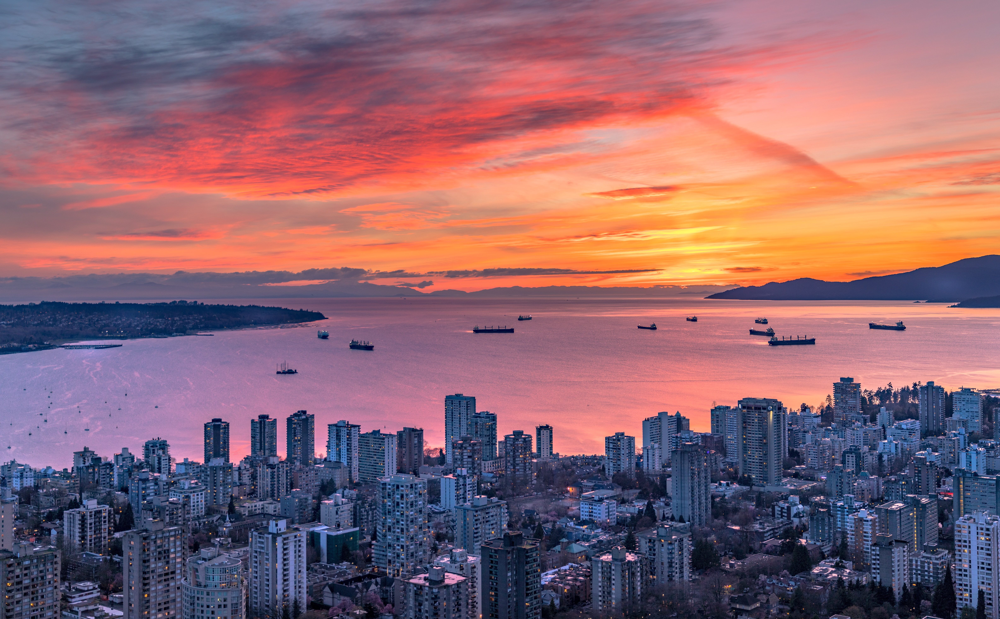
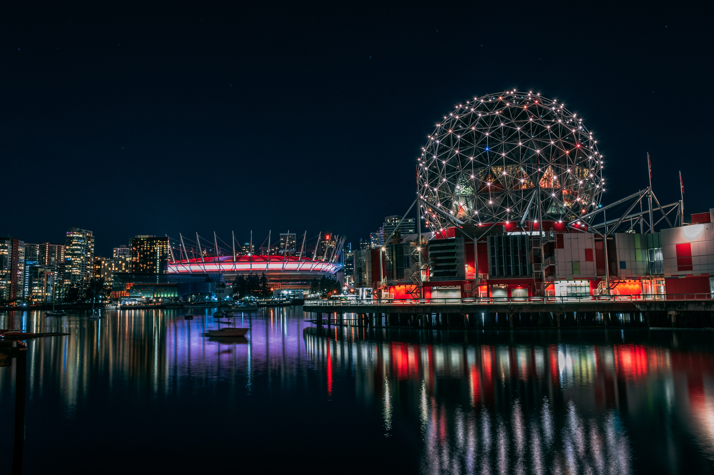

Vancouver is known for its high-rises surrounded by
beautiful nature. It is also known for its diverse
population who enjoy its unparalleled nature.
Vancouver is known for its rain, its ancient forests,its
ecologically-minded locals, and its seawall.
Locals and tourists know Vancouver for its world-famous swimming,
surfing and hiking along the Pacific Ocean.


Go Back